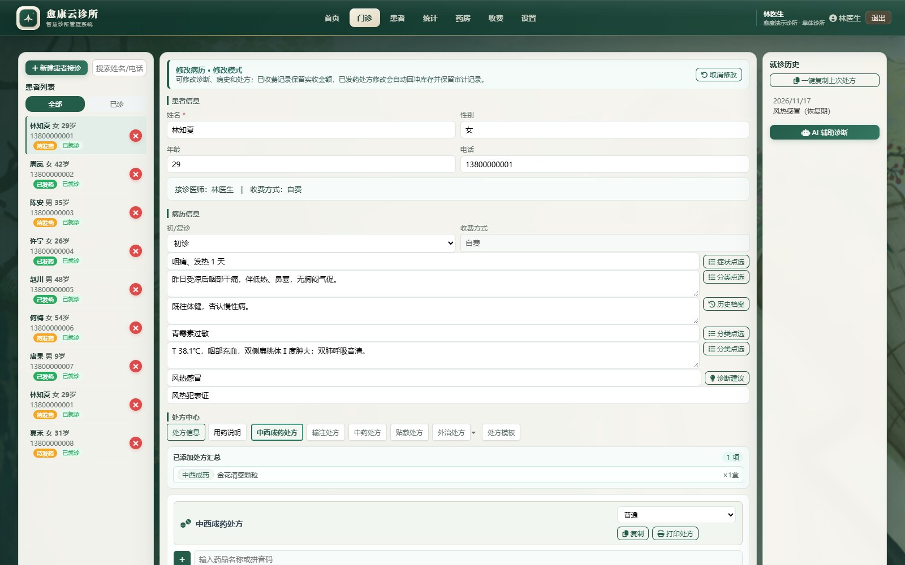
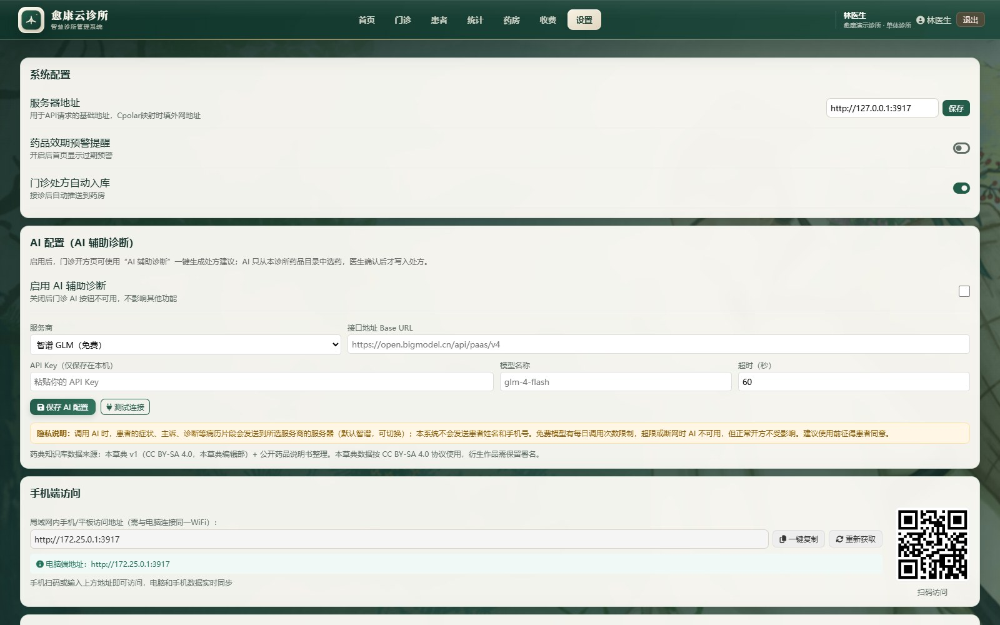
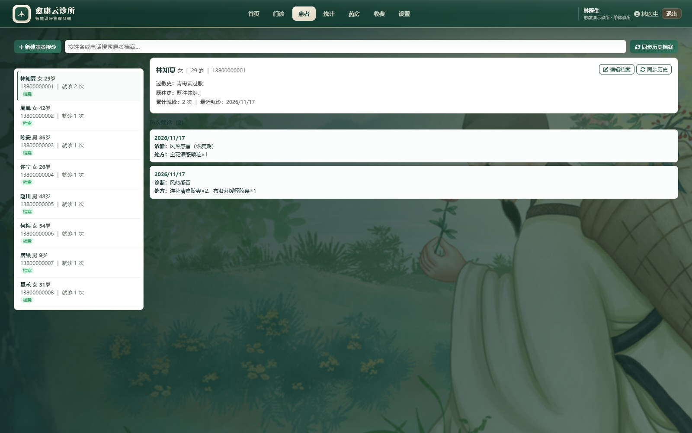

01
REAL SCREEN
电子病历
主诉、现病史、既往史、过敏史、四诊与体格检查结构化记录。查看历史，也能快速复制上次处方。
- 初诊 / 复诊 / 医保 / 自费标识
- 症状点选与诊断推荐
- 中西成药、输注、中药等处方类型
欢迎使用愈康云诊所管理平台。让每一次接诊，都有据可循。
愈康云诊所把接诊、病历、处方、药房、收费与经营统计收进一张安静的工作台。本地优先，断网也能完成核心业务；AI 只做辅助，最终决定始终在医生手里。
反复咳嗽 5 天，夜间加重
风寒咳嗽
中药 3 剂 · 每日 1 剂
一套诊所工作台，不是一堆彼此割裂的表格。
业务不是一个孤立的按钮，而是一条完整、可追溯的链路。切换每一步，右侧都会展示对应模块的真实软件界面。

患者档案、主诉、现病史、既往史、过敏史、体格检查与诊断在同一条业务链中流转，不重复录入。
减少窗口切换与重复录入。每张能力卡都直接展示对应业务场景，不用文字或抽象示意图代替真实界面。
主诉、现病史、既往史、过敏史、四诊与体格检查结构化记录。查看历史，也能快速复制上次处方。

药品、批次、效期、供应商和库存联动管理。发药自动出库，盘点差异自动计算，库存风险提前提醒。

接诊不等同于收费。只有收费员确认支付方式和实收金额后，收入才正式入账，避免统计口径混乱。

不是替你开方，而是把该看的风险先看一遍。AI 建议结合本店库存与药典知识，输出必须由医生逐条确认。

把一天的门诊量、收费明细、日报、项目统计、库存和毛利放在一张清楚的经营视图里。

部署、访问地址、AI 开关与数据设置集中在设置页。恢复前自动备份当前数据，恢复后执行完整性检查。
药品详情可查看药典条目与原文摘录；AI 检索基于本地知识库，在需要时给出有出处的参考。右侧就是药品知识查询的真实软件界面。
知识库整理自《中华人民共和国药典（2025年版）》相关公开资料，正式使用请购买正版出版物。

愈康采用本地优先架构。门店业务数据按门店隔离，敏感字段加密，关键操作进入审计链。是否启用第三方 AI，也由机构自己决定。

各门店使用独立 SQLite 数据空间，跨店权限在接口层拦截，不靠前端隐藏菜单。
身份证号使用 AES-256-GCM 加密保存，界面与日志仅展示必要信息。
第三方 AI 只接收处方建议所需的诊疗片段，不发送患者姓名与手机号；要求数据不出域的机构可使用本地模型或关闭 AI。
恢复前创建当前快照，恢复后执行完整性检查，并要求重新登录确认。
根据机构规模选择部署方式。核心原则不变：业务数据靠近门店，控制面只处理必要的组织与聚合信息。
一台 Windows 电脑运行完整工作台，适合个人医生与单体诊所，安装后即可开始接诊。

医生、收费与药房在同一诊所网络内协同工作，数据仍保存在门店本机。
总部通过独立控制面管理门店账号、邀请与聚合指标，各分店保留自己的业务数据空间。
如果你准备在诊所里落地，以下问题比“功能有多少”更值得先确认。
“云”指整套产品与服务形态，但核心业务数据默认留在门店本机。这样即使网络波动、云端 AI 不可用，接诊、处方、发药和收费这些关键流程仍能继续。
不是。页面中的工作台、病历、AI、药房、收费、药典、统计和设置图片均截取自 YuKangClinic v5.1.0 实际运行界面，使用演示诊所数据。AI 页面同时标注“界面截屏 + 演示响应”，当前演示环境未配置真实模型 Key。
不会。AI 只提供候选建议与风险检查，医生逐条应用、修改并主动保存后，内容才进入正式处方。系统不会自动以 AI 输出替代医生诊断和用药决策。
默认不能。总部控制台读取门店数量、门诊量、收费额、患者数和库存预警等聚合指标，不复制各店患者明细。
诊所业务系统面向内部使用，公开官网与内部工作台分开部署，是对患者数据更负责任的做法。官网只承载产品介绍和安装包下载，不连接诊所数据库。
v5.1.0 当前安装包没有 Windows 代码签名证书，Authenticode 状态为 NotSigned。请只从本官网下载，并在运行前核对下载页公布的 SHA256。正式商用前应重新签名构建。
Windows 10/11 x64 · v5.1.0 · 未签名内部预览版